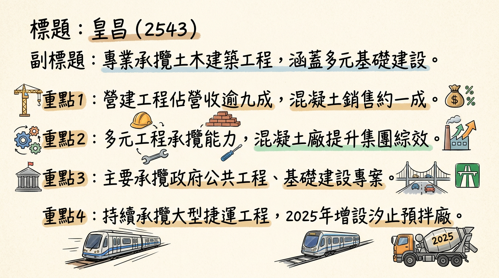
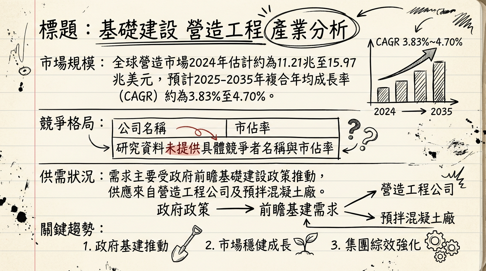
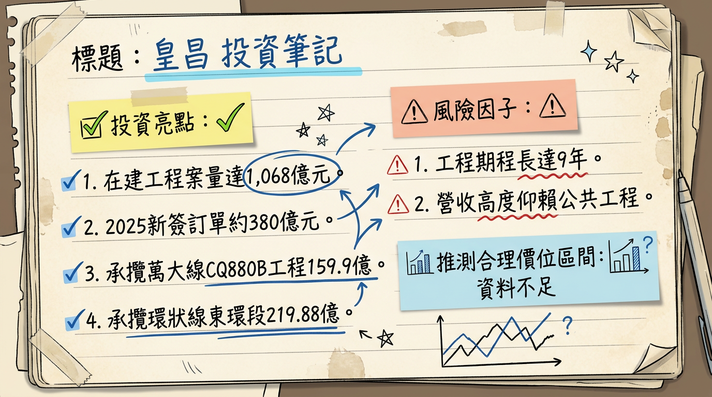

皇昌(2543)作為台灣基礎建設營造龍頭，憑藉逾1,068億元的龐大在手訂單、領先業界的海事工程專業與船隊，以及積極推動的垂直整合策略，未來數年營收能見度極高，將穩健受惠於政府公共工程、軌道建設及AI基礎建設浪潮，長期成長動能強勁。
皇昌營造股份有限公司（2543）主要從事土木建築工程的承攬業務。其核心產品與服務涵蓋多種工程類型，包括捷運、道路/橋梁、建築、重劃及海事工程。此外，皇昌透過旗下子公司和昌國際，亦從事混凝土的製造與銷售業務。
營收結構概覽| 業務項目 | 佔營收比重 | 主要內容 |
|---|---|---|
| 營建工程 | 逾九成 | 捷運、道路、橋梁、建築、重劃、海事工程等 |
| 混凝土銷售 | 約一成 | 預拌混凝土製造與銷售 |
作為營造工程公司，皇昌主要承攬專案。然而，其子公司和昌國際設有預拌混凝土廠，目前擁有台北內湖廠、桃園楊梅廠、桃園觀音廠，並於2025年新增新北市汐止預拌廠，共計四大廠。這些廠區有助於縮短運輸距離並擴大混凝土供貨涵蓋率，提升集團綜效。此外，2024年9月底成立的宏昌基礎科技，負責MASAGO、地下開挖支撐及基樁等專業基礎工程，強化集團在上下游的垂直整合能力。
| 月份 | 金額 (千元) | 月增率 (MoM) | 年增率 (YoY) |
|---|---|---|---|
| 2026年01月 | 1,041,817 | -20.14% | +34.97% |
| 2025年12月 | 1,304,565 | +14.73% | +22.21% |
| 2025年11月 | 1,136,983 | -6.08% | +1.11% |
| 2025年10月 | 1,210,614 | -0.37% | +19.41% |
| 2025年09月 | 1,215,133 | +14.94% | +19.53% |
| 2025年08月 | 1,057,104 | +15.97% | +17.04% |
皇昌最新一季數據為 2025年第三季：
* 全年EPS：5.25元。
* 全年EPS：尚未公布。2025年第一季至第三季累計EPS為 2.14元 (Q1: 0.69元, Q2: 0.74元, Q3: 0.71元)。
皇昌於2025年12月29日參加統一證券舉辦之法人說明會，管理層主要傳達以下營運概況與未來展望：
* 環狀線東環段Y29站尾軌(不含)至Y33站(不含)土木建築及水電環控區段標工程：契約金額新台幣219.876億元，工程期間自2026年3月至2035年2月。
* 積極拓展海事工程，迎來「皇昌101號」浮沉台船及兩艘海事船機隊（「皇昌99號」、「皇昌100號」），使船機隊達38艘，全面進軍海事工程業並搶佔液化天然氣接收站的百億商機。原定2025年底完工的第三座液化天然氣工程一期已於2024年5月提前完工，並在2024年底前完成驗收；二期觀塘接收站工程進度超前，有望提早一年半完工（原定2028年完工）。
* 新增設「機電部」與「開發投資部」，擴大跨入民間建築開發領域。
| 年度/季度 | 毛利率 (%) | 營業利益率 (%) | 稅後淨利率 (%) |
|---|---|---|---|
| 2025 Q3 | 20.18 | 15.93 | 12.56 |
| 2025 Q2 | 20.85 | 16.42 | 13.41 |
| 2025 Q1 | 17.04 | 11.98 | 12.76 |
| 2024 Q4 | 30.74 | 27.25 | 21.80 |
| 2024 Q3 | 16.84 | 13.62 | 10.85 |
| 2024 Q2 | 32.88 | 29.69 | 23.23 |
| 2024 Q1 | 8.83 | 5.88 | 4.65 |
* 執行期間：2025年11月14日至2026年01月13日。
* 原預計買回張數：10,000張，佔已發行股數1.88%。
* 實際買回數量：3,842,000股。
* 總金額：236,152,364元。
* 平均每股買回價格：61.47元。
* 佔公司已發行股份總數：0.72%。
* 公司表示未執行完畢原因為兼顧市場機制與股東權益，視股價及成交量分批買回。
* 年度股票股利：1.70元。
* 最近一次除權息日為2025年10月23日，配發每股現金股利0.5元。
* 勞動力短缺： 台灣營建業面臨約5.3萬人的缺工問題，特別是基層技術工種，導致工期延長與成本增加。
* 材料成本壓力： 2024年全球建築材料價格同比上漲8.3%。工業金屬（如銅、鋁）在2024至2026年進入供需緊平衡格局，價格中樞逐步上行。
* 特定領域需求強勁： 資料中心預計2025年開工支出將超過580億美元，年增率15.1%。
| 排名 | 公司名稱 | 總部所在地 | 2024年國際承包營收（億美元） |
|---|---|---|---|
| 1 | ACS/豪赫蒂夫 (GRUPO ACS/HOCHTIEF) | 西班牙 | 467.17 |
| 2 | 万喜 (VINCI) | 法國 | 452.30 |
| 3 | 布伊格 (BOUYGUES) | 法國 | 310.81 |
| 4 | 中國交建 (CHINA COMMUNICATIONS CONSTRUCTION GROUP LTD.) | 中國 | 261.03 |
| 5 | 斯特拉巴格 (STRABAG SE) | 奧地利 | 177.03 |
| 公司代號 | 公司名稱 | 2025Q3 毛利率 (%) | 2025Q3 EPS (元) | 2025年合併營收 (億元) | 主要競爭優勢 (皇昌) |
|---|---|---|---|---|---|
| 2543 | 皇昌 | 20.18 | 0.71 | 118.38 (全年) | 逾1,068億元在手訂單，海事工程領導者，垂直整合，優異履約實績。 |
| 2546 | 根基 | 8.5 (2025年全年) | 9.52 (2025年全年) | 214.94 (2025年全年) | (作為對比) |
* 數位轉型與智慧化： AI、物聯網(IoT)、區塊鏈等技術提升基礎設施效率。BIM與AI要求供應商提供透明數位履歷。預計到2028年將有超過40%的領先企業在關鍵業務中使用混合運算架構。
* 模組化與預製建造： 模組化建築可縮短30-50%工期，解決缺工問題，帶動對高強度、抗震結構螺絲的剛性需求。
* 永續發展與綠色建築： 綠色建築和節能設計成為主流。乾淨採購（Buy Clean）法案推動低碳鋼、EPD認證與長效防蝕塗層。
* 機會： 政府持續推動前瞻基礎建設；AI浪潮引爆數據中心、HPC機房及電力系統等「AI基礎建設」需求；皇昌在海事工程的獨特利基；擴大混凝土供貨涵蓋率。
* 威脅： 台灣營建業約5.3萬人的勞動力短缺；建築材料價格波動（如工業金屬價格上漲）；同業競爭加劇；全球經濟與地緣政治不確定性。2025年11月曾有報導指出中油三接工程浮報疑雲，雖公司已澄清，但潛在司法調查仍為短期風險。
* AI： AI技術發展帶動「AI基礎建設」大規模需求，包括數據中心、高效能運算機房及電力系統，皇昌有機會承接相關廠辦及設施建案。摩根士丹利預言2026年將是AI技術關鍵轉捩點。
* HBM： HBM是AI算力關鍵，其需求間接刺激AI伺服器與數據中心建設，進而對營造業產生需求。
* 電動車： 電動車普及推動充電基礎設施及電網升級，交通基礎設施投資在全球範圍內仍處於高峰（2024年達2.8兆美元，2019-2024年複合增長率5.7%），對承攬交通工程的皇昌為長期利好。
* 2025年12月29日法說會提及： 承攬萬大-中和-樹林線CQ880B區段標工程（契約金額159.9億元，期間2025年12月至2033年7月）及環狀線東環段Y29站至Y33站工程（契約金額219.876億元，期間2026年3月至2035年2月）。
* 2024年5月： 第三座液化天然氣工程一期提前完工，2024年底前完成驗收。二期工程進度超前，有望提早一年半完工（原定2028年完工）。
* 2026年01月10日： 公布2025年12月營收為13.05億元，月增14.74%，年增22.22%。
* 2025年11月12日： 報導指出中油三接二期工程浮報疑雲，皇昌澄清相關程序合規，否認指控，並已由司法單位調查。
* 2025年10月23日： 除息日，配發每股現金股利0.5元。
| 時間 | 成長動能描述 | 具體數字/事件 |
|---|---|---|
| 2024年5月 | 液化天然氣接收站工程進度超前，提前完工驗收 | 第三座液化天然氣工程一期提前完工，並在2024年底前完成驗收；二期工程進度大幅超前，有望提早一年半完工（原定2028年完工）。 |
| 2024年9月底 | 成立子公司強化垂直整合 | 成立「宏昌基礎科技」，專注於MASAGO、地下開挖支撐及基樁等專業基礎工程，提升集團上下游整合能力。 |
| 2025年 | 新增預拌廠擴大供貨涵蓋率，手握大量新簽訂單，確立未來營收基礎 | 和昌國際新增「新北市汐止預拌廠」，共計四大廠。2025年新簽訂工程金額約達380億元。 |
| 2025年12月 | 承攬重大軌道工程案，長期營收保障。 | 承攬臺北捷運萬大-中和-樹林線CQ880B區段標工程，契約金額159.9億元，工程期間自2025年12月至2033年7月。手握在建工程案量達1,068億元（截至2026年1月資料，認列期間長）。 |
| 2026年3月 | 承攬另一項重大軌道工程案，進一步鎖定長期營收。 | 承攬環狀線東環段Y29站至Y33站土木建築及水電環控區段標工程，契約金額219.876億元，工程期間自2026年3月至2035年2月。 |
| 2025年以後 | 發展海事工程船隊與專業能力，持續搶佔百億市場。集團資源整合，多角化經營。受惠於AI基礎建設需求 | 擁有包含東南亞最大浮沉台船「皇昌101號」在內的38艘全能工程船機隊。持續透過和昌國際、宏昌基礎垂直整合。新增「機電部」與「開發投資部」，擴大跨入民間建築開發領域。AI數據中心、HPC機房及電力系統等基礎建設需求爆發。 |
鑑於皇昌穩健的在手訂單，未來數年的營收能見度極高，且在海事工程等高毛利領域具備獨特競爭力。考量2024年EPS 5.25元，若以營造業市場平均本益比區間10-15倍進行推估，未來年度EPS在穩健訂單下有機會維持高檔，市場將持續給予其穩健估值。然而，本次研究資料未提供券商具體目標價或未來年度EPS預估，故本報告在缺乏進一步市場共識數據下，建議投資人應持續關注後續季度財報與管理層對長期獲利能力的指引，並以營收與獲利成長的確定性作為主要考量依據。
本報告由 AI 自動產生，資料來源為公開網路資訊，僅供參考，不構成投資建議。產生時間：2026-03-06 14:49


